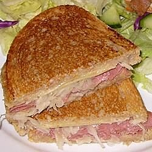

Home
Reuben Sandwich

Description
Prep: 15 mins, Cook: 10 mins.
Total: 25 mins
Macros
Protein:
31.2g
Carbohydrates:
43.5g
Fat:
40.3g
Micros
Cholesterol:
115mg
Sodium:
1930.3mg.
Per Serving: 657 calories
Ingredients
2 tablespoons butter
8 slices rye bread
8 slices deli sliced corned beef
8 slices Swiss cheese
1 cup sauerkraut, drained
½ cup Thousand Island dressing
Steps
Preheat a large skillet or griddle on medium heat.
Lightly butter one side of bread slices. Spread non-buttered sides with Thousand Island dressing.
On 4 bread slices, layer 1 slice Swiss cheese, 2 slices corned beef, 1/4 cup sauerkraut and second slice of Swiss cheese.
Top with remaining bread slices, buttered sides out.
Grill sandwiches until both sides are golden brown, about 5 minutes per side. Serve hot.